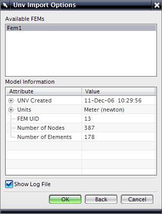

I-deas 通用文件
高级仿真软件可导入和导出符合 NX I-deas 5 通用文件指定的通用文件。
如果您使用的是定制应用程序（例如，内部求解器，它接受通用文件作为输入），则在 NX 中处理 I-deas 通用文件的功能将很有用。

I-deas 通用文件的导入和导出
-
从 I-deas 通用文件(.UNV)中导入数据集，高级仿真将使用这些数据集来新建 FEM 文件。
-
在 FEM 文件中，修改节点、单元、物理属性和材料。
-
完成修改后，将修改的文件导出到新的通用文件中。
要获取支持的数据集列表，参见高级仿真在线帮组中的 I-deas 通用文件。